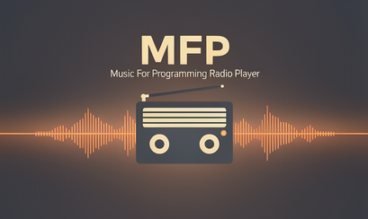

Lightweight terminal player for musicforprogramming.net. Streams directly, no external dependencies, MPRIS support.

Starts playing after a 512 KB buffer — no waiting for the full episode to download.
A full-screen player with an episode list and search; play/pause, volume, mute, next, previous, shuffle — all from the keyboard while it runs.
Six animated styles that move with the music. Switch with v, turn off with V. See the styles.
Six built-in themes, or make your own with a small text file. Choose your colors.
Exposes D-Bus MPRIS so Polybar, KDE, GNOME, and any media client can see and control it.
Save episodes to ~/.config/mfp/downloads/ with d or mfp download.
Mark episodes as favorites and play only those, with or without shuffle.
Pure Rust audio pipeline — no mpv, no ffmpeg. MP3, FLAC, AAC, ALAC, Vorbis, WAV.
Requires Rust stable. The release profile strips debug info and optimizes for size (the binary is about 5 MB).
git clone https://github.com/4DRIAN0RTIZ/mfp && cd mfp
cargo build --release
Copy the binary system-wide so you can run mfp from anywhere.
sudo cp target/release/mfp /usr/local/bin/
Running mfp opens the full-screen player. It is the same as mfp play. Press q to quit. See Using the player for all the keys.
mfp
mfp # start the player mfp play # same, first episode mfp play -e 75 # specific episode mfp play -s # shuffle mfp play -f # favorites only mfp play -f -s # favorites + shuffle mfp play --compact # start with the list hidden mfp play --plain # text mode, type cmd + Enter
mfp fav -l # list mfp fav -a "Episode 75" # add mfp fav -r "Episode 75" # remove
mfp download -e 75 # download ep mfp download --list # list cached mfp download --size # disk usage mfp download --delete … # remove ep
mfp list # all episodes
When you run mfp it fills your terminal window. On a normal-sized window you get two panels side by side:
▶ marks the one that is playing and a ★ marks your favorites.Press h to hide the episode list and give the whole window to the player and visualizer. Press h again to bring the list back. You can also start with the list hidden using mfp play --compact.
You do not have to choose: until you press h, mfp picks the view from the size of your window. Below about 80 columns by 16 rows it uses the compact view by itself and switches back when you make the window bigger. Once you press h, your choice sticks for the rest of the session. Showing the list needs at least 64 by 12; on a smaller window h does nothing. If the window is really tiny (under 40 by 9) mfp asks you to make it bigger. When the list is hidden, the keys that move around the list do nothing.
Just press the key, no Enter needed. Keys are case-sensitive: v and V do different things.
Press / and start typing: the list narrows down as you type. While you are typing, letters go into the search box, so they will not trigger the keys above. Press Enter to keep the filtered list, or Esc to clear the search. The arrows, PgUp/PgDn, Home and End still move the selection while you search, and Ctrl+C always quits.
The list keys (moving, Enter, /) only work while the episode list is shown.
While an episode plays, mfp draws the sound as a live animation under the player. It reacts to what you are hearing: bass on the left, treble on the right. When you pause, it settles down to nothing. It only listens; it never changes the audio.
Press v to switch to the next style, and V to turn the animation off or on. If it is off, v turns it on again with the next style. In the compact view the visualizer is shown when the window is at least 13 rows tall.
barsClassic vertical bars. This is the default.
█ ▃ █ ▅ ▂ █ ▅ █ █ ▇ ▂ █ █ █ █ █ █ ▄ █ █ █ █ █ █ █ █ █
mirrorBars that grow up and down from a middle line.
▂ █
▃ █ █ █ █ ▅
█ █ █ █ █ █ █
█ █ █ █ █ █ █
▀ █ █ █ █ ▀
▀ █
waveA wavy line, like an oscilloscope, drawn with tiny dots.
⣀⡠⡀ ⢀
⠑⠒⠉⠉⢆ ⢀⠔⠢⡀ ⣀⢄⡠⠊
⠉⠉⠁ ⠈⠉⠉
dotsColumns of dots with a small marker that lingers at the highest point.
▪ ▪ ▪ · ▪ · ▪ · · · · · ▪ · · · · · · ▪ · · · · · · ·
areaA smooth filled shape that follows the sound.
▃▄▆▇▅ ▃▆█████▄▂ ▅█████████▇▃ ████████████ ████████████
vuTwo level meters, one for the left speaker and one for the right.
L ▮▮▮▮▮▮▮▮▮▮▮▮▯▯▯▯▯▯ R ▮▮▮▮▮▮▮▮▮▮▮▮▮▯▯▯▯▯
These sketches are only an idea of the shape. The real thing is colored and moves; the colors come from your theme.
The style you pick with v and V lasts until you quit. To choose what mfp starts with, add a [visualizer] section to your config file:
[visualizer]
style = "wave" # bars, mirror, wave, dots, area or vu
enabled = true # false starts with the visualizer off
If the style name is not recognized, mfp starts with bars and writes a note to its log file.
mfp comes with six color themes. You choose one in the config file; there is deliberately no key to change the theme while listening, so a stray key press never repaints your screen.
defaultThe original look. Uses your terminal's own colors with a blue highlight, so it fits both dark and light terminals. This is what you get if you choose nothing.
solarizedCalm blue-green tones on a dark teal background.
high-contrastPlain black and white with bright colors, easy to read on any screen. Uses your terminal's own basic colors (its black, white, bright cyan and so on), so the exact shades depend on your terminal.
gruvboxWarm, earthy colors with a yellow highlight.
nordCool, muted arctic blues.
draculaDark purple background with pink and cyan accents.
Create the file ~/.config/mfp/config.toml (create the folder if it does not exist yet) with the name of the theme:
# ~/.config/mfp/config.toml
[theme]
active = "nord"
[visualizer]
style = "bars"
enabled = true
Every line is optional. Leave out anything you do not want to change. Restart mfp to see the change.
A theme is a small text file in ~/.config/mfp/themes/. Name it after your theme: a file called midnight.toml is chosen with active = "midnight". Your file starts from one of the built-in themes (using base) and changes only the colors you list. If you leave out base, it starts from default. The base has to be one of the six built-in themes, not another theme of your own.
# ~/.config/mfp/themes/midnight.toml
base = "nord"
accent = "#c5a85b"
viz_high = "light-red"
favorite = "yellow"
Then select it in config.toml:
[theme]
active = "midnight"
"cyan", "red", "light-blue", "dark-gray", "white". The names are black, red, green, yellow, blue, magenta, cyan, gray, dark-gray and white, plus a light- version of the bright ones. These use your terminal's own palette, so the exact shade depends on your terminal."#c5a85b". Exactly six digits after the #. This needs a terminal that shows millions of colors; most modern ones do."166", from the standard 256-color palette."reset": use your terminal's own color.Always put the color in quotes.
Each line in your theme file is one of these names, set to a color.
| Option | What it changes |
|---|---|
background | The color behind everything. With "reset" mfp paints nothing and your terminal's own background shows. |
foreground | The main text color. With "reset" your terminal's own text color is kept. |
accent | Titles, icons and other highlighted parts. |
muted | Less important text: durations, labels, hints. |
border | The lines around and between the panels. |
success | Good news, such as the media-keys dot when it is connected. |
danger | Error messages. |
status_text | Short informational messages. |
help_key | The key names in the help line. |
help_text | The descriptions in the help line. |
| Option | What it changes |
|---|---|
selection_bg | The background of the highlighted row in the episode list. |
selection_fg | The text color of the highlighted row. If both selection options are "reset", the row is simply shown with swapped colors. |
playing_marker | The ▶ next to the episode that is playing. |
favorite | The ★ favorite star. |
progress_filled | The part of the progress bar already played. |
progress_empty | The part of the progress bar still to come. |
volume_filled | The filled part of the volume bar. |
volume_empty | The empty part of the volume bar. |
| Option | What it changes |
|---|---|
viz_low | The lower part of the bars, the low levels. |
viz_mid | The middle part of the bars. |
viz_high | The top part of the bars, the high levels. When these three are hex colors, the bars blend smoothly from one to the next; otherwise they change in steps. |
viz_peak | The small markers that linger at the highest point in the dots style. |
viz_dim | The dots themselves and the empty parts of the level meters. |
viz_wave | The line of the wave style. |
viz_vu_ok | Level meters, normal zone (up to 60% of the scale). |
viz_vu_warn | Level meters, loud zone (up to 85%). |
viz_vu_clip | Level meters, very loud zone (above 85%). |
viz_vu_hold | The small tick that stays at the recent peak of each level meter. |
mfp never refuses to start because of a theme. If the theme file is missing, has a typo in an option name, uses a color it does not understand, or names a base that is not built in, mfp shows the default look and writes the reason to its log file. The same goes for a config file it cannot read: it uses the defaults and logs why. Look at the log if your theme does not appear.
Tip: if you copy the example above and nothing changes, check the spelling of the option names. An unknown name makes the whole theme file fail, not just that line.
Everything mfp saves is kept in one folder, ~/.config/mfp/. If you have set $XDG_CONFIG_HOME, mfp uses $XDG_CONFIG_HOME/mfp/ instead.
| Path | What it is |
|---|---|
config.toml | Your settings: the theme and the starting visualizer style. Optional; you create it. |
themes/ | Your own themes, one .toml file each. Optional. |
favorites.json | Your favorite episodes. |
downloads/ | Episodes you saved with d or mfp download. |
mfp.log | A short log. mfp writes here when something goes wrong quietly, for example the media-keys connection is not available or a theme could not be loaded. |
mfp only reads config.toml and your theme files. It never edits or creates them, so your own comments and formatting are safe. Changes you make with v and V last until you quit; to keep them, edit the file yourself.
Settings are read once, when mfp starts. Restart it after editing the files.
Prefer the original, simple interface? Run mfp play --plain. Instead of a full-screen window, mfp prints status lines and waits for you to type a command and press Enter.
mfp play --plain
| Type | What it does |
|---|---|
n or next | Next episode |
b, back, prev or previous | Previous episode |
p, pause or play | Pause / resume |
+ or up | Volume up |
- or down | Volume down |
m or mute | Mute / unmute |
s or shuffle | Shuffle on / off |
f, fav or favorite | Add / remove favorite |
i or info | Episode info |
d or download | Download this episode |
q, quit or exit | Quit |
Text mode has no visualizer and no themes. The options -e, -s and -f work here too, but --compact does not (it belongs to the full-screen player).
mfp switches to text mode by itself when it cannot draw a full-screen window: when its input or output is redirected (for example mfp play | cat or a script) or the terminal type is dumb. Typing just mfp in that situation only prints a short overview of the commands, so music never starts by surprise.
You can also feed it commands from another program. When the input is redirected, each line is read as a command, and the moving progress line is not drawn. If that input ends, the music keeps playing (closing the input is not a request to quit). Send q before it ends to quit, or stop it with Ctrl+C or your media keys.
printf 'i\nq\n' | mfp play
Press f in the player to mark the current episode with a star, or manage them from the command line. To listen to only your favorites, start with mfp play -f.
mfp fav -l # show your favorites
mfp fav -a "Episode 75" # add one
mfp fav -r "Episode 75" # remove one
Press d in the player, or use the command line, to save an episode in the downloads folder (see Files). mfp still streams episodes when you play them.
mfp download -e 75 # download episode 75
mfp download -l # list what you have downloaded
mfp download -s # how much disk space it uses
mfp download -d "Episode 75" # delete a download
mfp list prints every episode in the terminal, which is handy for finding a number to use with -e.
mfp list